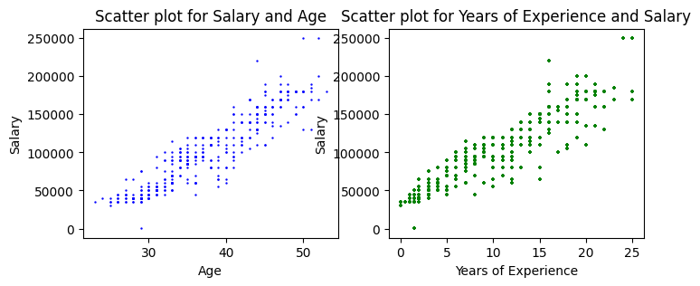
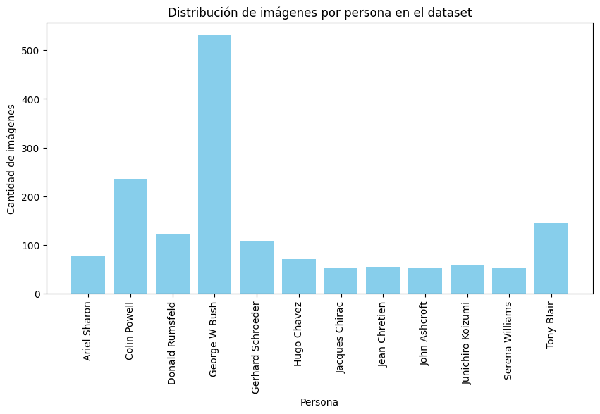
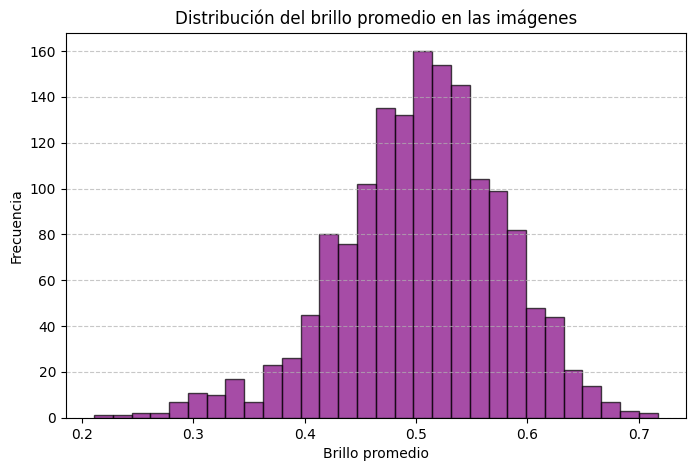

#!pip install seaborn<img src="https://mejores.com/wp-content/uploads/2020/08/Universidad-Tecnica-Federico-Santa-Maria.jpg" title="Title text" width="20%" height="20%" />Ciencia de Datos-2026
Procesamiento y limpieza de datos
Objetivos de aprendizaje: * Acceder y manipular datos dentro de DataFrame * Importar datos CSV a un DataFrame de Pandas
Dataset
El principal conjunto de datos utilizado es «Salary Data.csv», que engloba varias características:
- Edad: La edad de los empleados.
- Años de experiencia: La experiencia laboral total de los empleados.
- Sexo: El sexo de los empleados.
- Cargo: La designación o función de los empleados.
- Nivel de estudios: La titulación educativa más alta de los empleados.
- Salario: El salario anual de los empleados (nuestra variable objetivo).
Cargar un archivo completo en un DataFrame. El siguiente ejemplo carga un archivo con datos de viviendas de California. Ejecuta la siguiente celda para cargar los datos y crear definiciones de funciones:
El dataset utilizado es Salary Data.csv del repositorio alavi-sam/salary-prediction.
import pandas as pd
import numpy as np
import random
import matplotlib.pyplot as plt
import seaborn as sns
df = pd.read_csv('Salary Data.csv')
print(df.shape)
df.head()(375, 6)| Age | Gender | Education Level | Job Title | Years of Experience | Salary | |
|---|---|---|---|---|---|---|
| 0 | 32.0 | Male | Bachelor's | Software Engineer | 5.0 | 90000.0 |
| 1 | 28.0 | Female | Master's | Data Analyst | 3.0 | 65000.0 |
| 2 | 45.0 | Male | PhD | Senior Manager | 15.0 | 150000.0 |
| 3 | 36.0 | Female | Bachelor's | Sales Associate | 7.0 | 60000.0 |
| 4 | 52.0 | Male | Master's | Director | 20.0 | 200000.0 |
df.info(): Retorna información (número de filas, número de columnas, índices, tipo de las columnas y memoria usada) sobre elDataFramedf.df.shape: Retorna una tupla con el número de filas y columnas delDataFramedf.df.size: Retorna el número de elementos delDataFrame.df.columns: Retorna una lista con los nombres de las columnas delDataFramedf.df.index: Retorna una lista con los nombres de las filas delDataFramedf.df.dtypes: Retorna una serie con los tipos de datos de las columnas delDataFramedf.df.head(n): Retorna lasnprimeras filas delDataFramedf.df.tail(n): Retorna lasnúltimas filas delDataFramedf.
df.dtypes| 0 | |
|---|---|
| Age | float64 |
| Gender | object |
| Education Level | object |
| Job Title | object |
| Years of Experience | float64 |
| Salary | float64 |
Contar los valores únicos en cada columna categórica
df['Gender'].unique()array(['Male', 'Female', nan], dtype=object)for col in ('Gender', 'Education Level', 'Job Title'):
print(f'en la columna {col} hay {df[col].nunique()} valores únicos.')en la columna Gender hay 2 valores únicos.
en la columna Education Level hay 3 valores únicos.
en la columna Job Title hay 174 valores únicos.Seleccionar columnas
Se crea un nuevo DataFrame x a partir de df, descartando las columnas "Gender" y "Job Title" (axis=1 indica que se eliminan columnas, no filas).
x = df.drop(['Gender', 'Job Title'], axis = 1)
print(x.shape)
x.head()(375, 4)| Age | Education Level | Years of Experience | Salary | |
|---|---|---|---|---|
| 0 | 32.0 | Bachelor's | 5.0 | 90000.0 |
| 1 | 28.0 | Master's | 3.0 | 65000.0 |
| 2 | 45.0 | PhD | 15.0 | 150000.0 |
| 3 | 36.0 | Bachelor's | 7.0 | 60000.0 |
| 4 | 52.0 | Master's | 20.0 | 200000.0 |
Seleccionar filas y columnas en Pandas mediante posición con iloc
El método iloc se utiliza en los DataFrames para seleccionar los elementos en base a su ubicación.
Su sintaxis es:
data.iloc[<filas>, <columnas>], donde<filas>y<columnas>son la posición de las filas y columnas que se desean seleccionar en el orden que aparecen en el objeto. Una notación familiar para los usuarios de Matlab.
print(df.iloc[0]) # Primera fila
df.iloc[1] # Segunda fila
dfa = df.iloc[-1] # Última fila
dfa.head()Age 32.0
Gender Male
Education Level Bachelor's
Job Title Software Engineer
Years of Experience 5.0
Salary 90000.0
Name: 0, dtype: object| 374 | |
|---|---|
| Age | 44.0 |
| Gender | Female |
| Education Level | PhD |
| Job Title | Senior Business Analyst |
| Years of Experience | 15.0 |
#print(df.head())
df.iloc[0:5] # Primeras cinco filas
df.iloc[:, 0:5] # Primeras cinco columnas
df_new = df.iloc[[0,2,1]] # Primera, tercera y segunda filas
#df_new = df.iloc[:, [0,2,1]] # Primera, tercera y segunda columnas
print(df_new.shape)
df_new.head()(3, 6)| Age | Gender | Education Level | Job Title | Years of Experience | Salary | |
|---|---|---|---|---|---|---|
| 0 | 32.0 | Male | Bachelor's | Software Engineer | 5.0 | 90000.0 |
| 2 | 45.0 | Male | PhD | Senior Manager | 15.0 | 150000.0 |
| 1 | 28.0 | Female | Master's | Data Analyst | 3.0 | 65000.0 |
Seleccionar filas y columnas en Pandas en base a etiquetas con loc
El método loc se puede usar de dos formas diferentes:
Seleccionar filas o columnas en base a una etiqueta: Puedes seleccionar una o varias filas o columnas especificando las etiquetas correspondientes.
Seleccionar filas o columnas en base a una condición: También puedes seleccionar filas o columnas que cumplan con una condición específica, lo que permite filtrar los datos de manera flexible.
df.head()| Age | Gender | Education Level | Job Title | Years of Experience | Salary | |
|---|---|---|---|---|---|---|
| 0 | 32.0 | Male | Bachelor's | Software Engineer | 5.0 | 90000.0 |
| 1 | 28.0 | Female | Master's | Data Analyst | 3.0 | 65000.0 |
| 2 | 45.0 | Male | PhD | Senior Manager | 15.0 | 150000.0 |
| 3 | 36.0 | Female | Bachelor's | Sales Associate | 7.0 | 60000.0 |
| 4 | 52.0 | Male | Master's | Director | 20.0 | 200000.0 |
Por ejemplo, si se han seleccionado las filas del 1 al 4 y se carga el resultado en un nuevo DataFrame a la hora de acceder a la fila 1 con loc se tendrá la primera del nuevo objeto mientras que iloc devolverá la segunda. Esto es así porque los índices se conservan, pero no las posiciones.
df_sub = df.loc[1:4]
df_sub| Age | Gender | Education Level | Job Title | Years of Experience | Salary | |
|---|---|---|---|---|---|---|
| 1 | 28.0 | Female | Master's | Data Analyst | 3.0 | 65000.0 |
| 2 | 45.0 | Male | PhD | Senior Manager | 15.0 | 150000.0 |
| 3 | 36.0 | Female | Bachelor's | Sales Associate | 7.0 | 60000.0 |
| 4 | 52.0 | Male | Master's | Director | 20.0 | 200000.0 |
En resumen, loc usa las etiquetas del índice, mientras que iloc usa las posiciones numéricas de las filas o columnas. Esto puede llevar a resultados diferentes si el índice no es el índice numérico predeterminado.
df.head()| Age | Gender | Education Level | Job Title | Years of Experience | Salary | |
|---|---|---|---|---|---|---|
| 0 | 32.0 | Male | Bachelor's | Software Engineer | 5.0 | 90000.0 |
| 1 | 28.0 | Female | Master's | Data Analyst | 3.0 | 65000.0 |
| 2 | 45.0 | Male | PhD | Senior Manager | 15.0 | 150000.0 |
| 3 | 36.0 | Female | Bachelor's | Sales Associate | 7.0 | 60000.0 |
| 4 | 52.0 | Male | Master's | Director | 20.0 | 200000.0 |
print(df_sub.loc[1])
print('')
print(df_sub.iloc[1])Age 28.0
Gender Female
Education Level Master's
Job Title Data Analyst
Years of Experience 3.0
Salary 65000.0
Name: 1, dtype: object
Age 45.0
Gender Male
Education Level PhD
Job Title Senior Manager
Years of Experience 15.0
Salary 150000.0
Name: 2, dtype: objectSeleccionar columnas…
df.loc[:, 'Gender'] # Columna Gender
df.loc[:, ['Gender', 'Salary']] #re Columnas Gender, Salary| Gender | Salary | |
|---|---|---|
| 0 | Male | 90000.0 |
| 1 | Female | 65000.0 |
| 2 | Male | 150000.0 |
| 3 | Female | 60000.0 |
| 4 | Male | 200000.0 |
| ... | ... | ... |
| 370 | Female | 85000.0 |
| 371 | Male | 170000.0 |
| 372 | Female | 40000.0 |
| 373 | Male | 90000.0 |
| 374 | Female | 150000.0 |
375 rows × 2 columns
Seleccionar filas o columnas en base a una condición con loc
df['Education Level'].unique()array(["Bachelor's", "Master's", 'PhD', nan], dtype=object)has_masters = df.loc[:, 'Education Level'] == "Master's"
df_masters = df.loc[has_masters]
print(df_masters.shape)
df_masters.head()(98, 6)| Age | Gender | Education Level | Job Title | Years of Experience | Salary | |
|---|---|---|---|---|---|---|
| 1 | 28.0 | Female | Master's | Data Analyst | 3.0 | 65000.0 |
| 4 | 52.0 | Male | Master's | Director | 20.0 | 200000.0 |
| 6 | 42.0 | Female | Master's | Product Manager | 12.0 | 120000.0 |
| 10 | 29.0 | Male | Master's | Software Developer | 3.0 | 75000.0 |
| 13 | 40.0 | Female | Master's | Project Manager | 14.0 | 130000.0 |
Problemas en los datos
1. Información general del DataFrame
print("Información general del DataFrame:")
print(df.info())Información general del DataFrame:
<class 'pandas.core.frame.DataFrame'>
RangeIndex: 375 entries, 0 to 374
Data columns (total 6 columns):
# Column Non-Null Count Dtype
--- ------ -------------- -----
0 Age 373 non-null float64
1 Gender 373 non-null object
2 Education Level 373 non-null object
3 Job Title 373 non-null object
4 Years of Experience 373 non-null float64
5 Salary 373 non-null float64
dtypes: float64(3), object(3)
memory usage: 17.7+ KB
None2. Verificar valores faltantes (NaN)
print("\nValores faltantes (NaN) por columna:")
print(df.isnull().sum())
Valores faltantes (NaN) por columna:
Age 2
Gender 2
Education Level 2
Job Title 2
Years of Experience 2
Salary 2
dtype: int64df['Age'].median()36.0df['Age'] = df['Age'].fillna(df['Age'].mean())
DFN = df.fillna(0)
print(DFN.isnull().sum())Age 0
Gender 0
Education Level 0
Job Title 0
Years of Experience 0
Salary 0
dtype: int64col = 'Gender'
moda = df[col].mode()[0]
print(moda)
df[col] = df[col].fillna(moda)
print(df.isnull().sum())Male
Age 0
Gender 0
Education Level 2
Job Title 2
Years of Experience 2
Salary 2
dtype: int64Haz clic aquí para ver la solución
col = ['Gender', 'Education Level', 'Job Title']
for c in col:
moda_c = df[c].mode()[0] # extrae la moda de la columna c
df[c].fillna(moda_c, inplace=True)
print(df.isnull().sum())
::: {#cell-35 .cell quarto-private-1='{"key":"colab","value":{"base_uri":"https://localhost:8080/"}}' outputId='5ee30f98-4891-449d-bcd8-2589d6ce9b2f' execution_count=620}
``` {.python .cell-code}
# TODO: Para las variables categóricas, reemplace los valores faltantes con la moda computada como df[c].mode()[0]
# Escribe tu código aquí:
col = ['Gender', 'Education Level', 'Job Title']
for column in col:
moda = df[column].mode()[0]
print(moda)
df[column] = df[column].fillna(moda)
col = ['Age', 'Salary', 'Years of Experience']
for column in col:
df[column] = df[column].fillna(df[column].median())
print(df.isnull().sum())Male
Bachelor's
Director of Marketing
Age 0
Gender 0
Education Level 0
Job Title 0
Years of Experience 0
Salary 0
dtype: int64:::
3. Estadísticas descriptivas
print("\nEstadísticas descriptivas:")
print(df.describe())
Estadísticas descriptivas:
Age Years of Experience Salary
count 375.000000 375.000000 375.00000
mean 37.431635 10.025333 100547.60000
std 7.050146 6.539884 48112.57612
min 23.000000 0.000000 350.00000
25% 31.500000 4.000000 55000.00000
50% 36.000000 9.000000 95000.00000
75% 44.000000 15.000000 140000.00000
max 53.000000 25.000000 250000.000004. Verificar tipos de datos únicos en columnas categóricas
print("\nValores únicos en columnas categóricas:")
for col in ['Gender', 'Education Level']:#, 'Job Title']:
print(f"\n{col}: {df[col].unique()}")
Valores únicos en columnas categóricas:
Gender: ['Male' 'Female']
Education Level: ["Bachelor's" "Master's" 'PhD']5. Verificar si hay duplicados
print(f"\nNúmero de filas duplicadas: {df.duplicated().sum()}")
Número de filas duplicadas: 50df.duplicated()| 0 | |
|---|---|
| 0 | False |
| 1 | False |
| 2 | False |
| 3 | False |
| 4 | False |
| ... | ... |
| 370 | True |
| 371 | False |
| 372 | True |
| 373 | True |
| 374 | True |
375 rows × 1 columns
df.tail(10)| Age | Gender | Education Level | Job Title | Years of Experience | Salary | |
|---|---|---|---|---|---|---|
| 365 | 43.0 | Male | Master's | Director of Marketing | 18.0 | 170000.0 |
| 366 | 31.0 | Female | Bachelor's | Junior Financial Analyst | 3.0 | 50000.0 |
| 367 | 41.0 | Male | Bachelor's | Senior Product Manager | 14.0 | 150000.0 |
| 368 | 44.0 | Female | PhD | Senior Data Engineer | 16.0 | 160000.0 |
| 369 | 33.0 | Male | Bachelor's | Junior Business Analyst | 4.0 | 60000.0 |
| 370 | 35.0 | Female | Bachelor's | Senior Marketing Analyst | 8.0 | 85000.0 |
| 371 | 43.0 | Male | Master's | Director of Operations | 19.0 | 170000.0 |
| 372 | 29.0 | Female | Bachelor's | Junior Project Manager | 2.0 | 40000.0 |
| 373 | 34.0 | Male | Bachelor's | Senior Operations Coordinator | 7.0 | 90000.0 |
| 374 | 44.0 | Female | PhD | Senior Business Analyst | 15.0 | 150000.0 |
dato_370 = df.iloc[370]
print(dato_370)Age 35.0
Gender Female
Education Level Bachelor's
Job Title Senior Marketing Analyst
Years of Experience 8.0
Salary 85000.0
Name: 370, dtype: objectdf_new = df.drop_duplicates()
df_new| Age | Gender | Education Level | Job Title | Years of Experience | Salary | |
|---|---|---|---|---|---|---|
| 0 | 32.0 | Male | Bachelor's | Software Engineer | 5.0 | 90000.0 |
| 1 | 28.0 | Female | Master's | Data Analyst | 3.0 | 65000.0 |
| 2 | 45.0 | Male | PhD | Senior Manager | 15.0 | 150000.0 |
| 3 | 36.0 | Female | Bachelor's | Sales Associate | 7.0 | 60000.0 |
| 4 | 52.0 | Male | Master's | Director | 20.0 | 200000.0 |
| ... | ... | ... | ... | ... | ... | ... |
| 348 | 28.0 | Female | Bachelor's | Junior Operations Manager | 1.0 | 35000.0 |
| 349 | 36.0 | Male | Bachelor's | Senior Business Development Manager | 8.0 | 110000.0 |
| 350 | 44.0 | Female | PhD | Senior Data Scientist | 16.0 | 160000.0 |
| 351 | 31.0 | Male | Bachelor's | Junior Marketing Coordinator | 3.0 | 55000.0 |
| 371 | 43.0 | Male | Master's | Director of Operations | 19.0 | 170000.0 |
325 rows × 6 columns
6. Dummy variables
Las dummy variables (o variables indicadoras) convierten una característica categórica en varias columnas binarias (0/1), una por cada categoría. Esto es necesario porque la mayoría de los algoritmos de machine learning requieren entradas numéricas y no pueden trabajar directamente con etiquetas de texto.
- Representar información categórica (p. ej. género, país, tipo de producto) en forma numérica.
- Evitar que el algoritmo interprete un orden o magnitud donde no existe (p. ej. “rojo” > “azul”).
df = pd.read_csv('Salary Data.csv')
print(df.shape)
df_dummies = pd.get_dummies(df, columns= ['Gender', 'Education Level', 'Job Title'],
drop_first=True)
print(df_dummies.shape)
df_dummies.head()(375, 6)
(375, 179)| Age | Years of Experience | Salary | Gender_Male | Education Level_Master's | Education Level_PhD | Job Title_Accountant | Job Title_Administrative Assistant | Job Title_Business Analyst | Job Title_Business Development Manager | ... | Job Title_Supply Chain Manager | Job Title_Technical Recruiter | Job Title_Technical Support Specialist | Job Title_Technical Writer | Job Title_Training Specialist | Job Title_UX Designer | Job Title_UX Researcher | Job Title_VP of Finance | Job Title_VP of Operations | Job Title_Web Developer | |
|---|---|---|---|---|---|---|---|---|---|---|---|---|---|---|---|---|---|---|---|---|---|
| 0 | 32.0 | 5.0 | 90000.0 | True | False | False | False | False | False | False | ... | False | False | False | False | False | False | False | False | False | False |
| 1 | 28.0 | 3.0 | 65000.0 | False | True | False | False | False | False | False | ... | False | False | False | False | False | False | False | False | False | False |
| 2 | 45.0 | 15.0 | 150000.0 | True | False | True | False | False | False | False | ... | False | False | False | False | False | False | False | False | False | False |
| 3 | 36.0 | 7.0 | 60000.0 | False | False | False | False | False | False | False | ... | False | False | False | False | False | False | False | False | False | False |
| 4 | 52.0 | 20.0 | 200000.0 | True | True | False | False | False | False | False | ... | False | False | False | False | False | False | False | False | False | False |
5 rows × 179 columns
# Convertir (True→1, False→0)
bool_cols = df_dummies.select_dtypes(include='bool').columns
df_dummies[bool_cols] = df_dummies[bool_cols].astype(int)
df_dummies.head()| Age | Years of Experience | Salary | Gender_Male | Education Level_Master's | Education Level_PhD | Job Title_Accountant | Job Title_Administrative Assistant | Job Title_Business Analyst | Job Title_Business Development Manager | ... | Job Title_Supply Chain Manager | Job Title_Technical Recruiter | Job Title_Technical Support Specialist | Job Title_Technical Writer | Job Title_Training Specialist | Job Title_UX Designer | Job Title_UX Researcher | Job Title_VP of Finance | Job Title_VP of Operations | Job Title_Web Developer | |
|---|---|---|---|---|---|---|---|---|---|---|---|---|---|---|---|---|---|---|---|---|---|
| 0 | 32.0 | 5.0 | 90000.0 | 1 | 0 | 0 | 0 | 0 | 0 | 0 | ... | 0 | 0 | 0 | 0 | 0 | 0 | 0 | 0 | 0 | 0 |
| 1 | 28.0 | 3.0 | 65000.0 | 0 | 1 | 0 | 0 | 0 | 0 | 0 | ... | 0 | 0 | 0 | 0 | 0 | 0 | 0 | 0 | 0 | 0 |
| 2 | 45.0 | 15.0 | 150000.0 | 1 | 0 | 1 | 0 | 0 | 0 | 0 | ... | 0 | 0 | 0 | 0 | 0 | 0 | 0 | 0 | 0 | 0 |
| 3 | 36.0 | 7.0 | 60000.0 | 0 | 0 | 0 | 0 | 0 | 0 | 0 | ... | 0 | 0 | 0 | 0 | 0 | 0 | 0 | 0 | 0 | 0 |
| 4 | 52.0 | 20.0 | 200000.0 | 1 | 1 | 0 | 0 | 0 | 0 | 0 | ... | 0 | 0 | 0 | 0 | 0 | 0 | 0 | 0 | 0 | 0 |
5 rows × 179 columns
Análisis exploratorio de datos
1. Scatter Plot (gráfico de dispersión) para Salary y Age features
Un gráfico de dispersión (scatter plot) muestra puntos de datos en dos dimensiones, donde cada punto representa una observación en el conjunto de datos. En este caso, podemos visualizar cómo se relacionan las características “Salary” (en el eje y) y “Age” (en el eje x).
plt.figure(figsize=(8, 3))
plt.subplot(1, 2, 1)
plt.scatter(df['Age'], df['Salary'], marker = '.', s = 2, color = 'blue')
plt.xlabel('Age')
plt.ylabel('Salary')
plt.title('Scatter plot for Salary and Age')
plt.subplot(122)
plt.scatter(df['Years of Experience'], df['Salary'], marker = '+', s = 5, color = 'green')
plt.xlabel('Years of Experience')
plt.ylabel('Salary')
plt.title('Scatter plot for Years of Experience and Salary')
plt.show()
Normalización
- Evita que una característica domine por su magnitud.
- Convergencia: Mejora la optimización en redes y regresión por gradiente.
- Esencial para PCA, LDA y regresión regularizada (relacionados con varianza).
- Reduce overflow/underflow y errores de precisión.
- Interpretación: Compara fácilmente coeficientes y pesos.
Consideraciones para usar normalización
- Antes de algoritmos basados en distancia o gradiente.
- Antes de PCA, LDA o regularización.
- No necesario en árboles de decisión (Random Forest, XGBoost).
from sklearn.preprocessing import MinMaxScaler, StandardScaler, MaxAbsScalerNormalización Max
df = pd.read_csv('Salary Data.csv')
print(df.shape)
max_scaler = MaxAbsScaler()
df[['Age', 'Salary']] = max_scaler.fit_transform(df[['Age', 'Salary']])
print("\nDataFrame normalizado Max:")
print(f"Max 'Age' normalizado: {df['Age'].max()}")
print(f"Max 'Age' original: {pd.read_csv('Salary Data.csv')['Age'].max()}")
df.head()(375, 6)
DataFrame normalizado Max:
Max 'Age' normalizado: 1.0
Max 'Age' original: 53.0| Age | Gender | Education Level | Job Title | Years of Experience | Salary | |
|---|---|---|---|---|---|---|
| 0 | 0.603774 | Male | Bachelor's | Software Engineer | 5.0 | 0.36 |
| 1 | 0.528302 | Female | Master's | Data Analyst | 3.0 | 0.26 |
| 2 | 0.849057 | Male | PhD | Senior Manager | 15.0 | 0.60 |
| 3 | 0.679245 | Female | Bachelor's | Sales Associate | 7.0 | 0.24 |
| 4 | 0.981132 | Male | Master's | Director | 20.0 | 0.80 |
df = pd.read_csv('Salary Data.csv')
print(df.shape)
df['Age'] = df['Age'] / df['Age'].abs().max()
df['Salary'] = df['Salary'] / df['Salary'].abs().max()
print("\nDataFrame normalizado Max:")
print(f"Max 'Age' normalizado: {df['Age'].max()}")
print(f"Max 'Age' original: {pd.read_csv('Salary Data.csv')['Age'].max()}")
df.head()(375, 6)
DataFrame normalizado Max:
Max 'Age' normalizado: 1.0
Max 'Age' original: 53.0| Age | Gender | Education Level | Job Title | Years of Experience | Salary | |
|---|---|---|---|---|---|---|
| 0 | 0.603774 | Male | Bachelor's | Software Engineer | 5.0 | 0.36 |
| 1 | 0.528302 | Female | Master's | Data Analyst | 3.0 | 0.26 |
| 2 | 0.849057 | Male | PhD | Senior Manager | 15.0 | 0.60 |
| 3 | 0.679245 | Female | Bachelor's | Sales Associate | 7.0 | 0.24 |
| 4 | 0.981132 | Male | Master's | Director | 20.0 | 0.80 |
Normalización Min-Max
df = pd.read_csv('Salary Data.csv')
print(df.shape)
min_max_scaler = MinMaxScaler()
df[['Age', 'Salary']] = min_max_scaler.fit_transform(df[['Age', 'Salary']])
print("\nDataFrame normalizado Min-Max:")
print(f"Max 'Age' normalizado: {df['Age'].max()}")
print(f"Max 'Age' original: {pd.read_csv('Salary Data.csv')['Age'].max()}")
df.head()(375, 6)
DataFrame normalizado Min-Max:
Max 'Age' normalizado: 1.0
Max 'Age' original: 53.0| Age | Gender | Education Level | Job Title | Years of Experience | Salary | |
|---|---|---|---|---|---|---|
| 0 | 0.300000 | Male | Bachelor's | Software Engineer | 5.0 | 0.359103 |
| 1 | 0.166667 | Female | Master's | Data Analyst | 3.0 | 0.258963 |
| 2 | 0.733333 | Male | PhD | Senior Manager | 15.0 | 0.599439 |
| 3 | 0.433333 | Female | Bachelor's | Sales Associate | 7.0 | 0.238935 |
| 4 | 0.966667 | Male | Master's | Director | 20.0 | 0.799720 |
df = pd.read_csv('Salary Data.csv')
print(df.shape)
df['Age'] = (df['Age'] - df['Age'].min())/(df['Age'].max() - df['Age'].min())
df['Salary'] = (df['Salary'] - df['Salary'].min())/(df['Salary'].max() - df['Salary'].min())
print("\nDataFrame normalizado Max:")
print(f"Max 'Age' normalizado: {df['Age'].max()}")
print(f"Max 'Age' original: {pd.read_csv('Salary Data.csv')['Age'].max()}")
df.head()(375, 6)
DataFrame normalizado Max:
Max 'Age' normalizado: 1.0
Max 'Age' original: 53.0| Age | Gender | Education Level | Job Title | Years of Experience | Salary | |
|---|---|---|---|---|---|---|
| 0 | 0.300000 | Male | Bachelor's | Software Engineer | 5.0 | 0.359103 |
| 1 | 0.166667 | Female | Master's | Data Analyst | 3.0 | 0.258963 |
| 2 | 0.733333 | Male | PhD | Senior Manager | 15.0 | 0.599439 |
| 3 | 0.433333 | Female | Bachelor's | Sales Associate | 7.0 | 0.238935 |
| 4 | 0.966667 | Male | Master's | Director | 20.0 | 0.799720 |
Selección automática de columnas numéricas
df = pd.read_csv('Salary Data.csv')
print(df.shape)
min_max_scaler = MinMaxScaler()
num_cols = df.select_dtypes(include=np.number).columns
df[num_cols] = min_max_scaler.fit_transform(df[num_cols])
print("\nDataFrame normalizado Min-Max:")
print(f"Max 'Age' normalizado: {df['Age'].max()}")
print(f"Max 'Age' original: {pd.read_csv('Salary Data.csv')['Age'].max()}")
df.head()(375, 6)
DataFrame normalizado Min-Max:
Max 'Age' normalizado: 1.0
Max 'Age' original: 53.0| Age | Gender | Education Level | Job Title | Years of Experience | Salary | |
|---|---|---|---|---|---|---|
| 0 | 0.300000 | Male | Bachelor's | Software Engineer | 0.20 | 0.359103 |
| 1 | 0.166667 | Female | Master's | Data Analyst | 0.12 | 0.258963 |
| 2 | 0.733333 | Male | PhD | Senior Manager | 0.60 | 0.599439 |
| 3 | 0.433333 | Female | Bachelor's | Sales Associate | 0.28 | 0.238935 |
| 4 | 0.966667 | Male | Master's | Director | 0.80 | 0.799720 |
Normalización Z-score
df = pd.read_csv('Salary Data.csv')
print(df.shape)
scaler = StandardScaler()
df[['Age','Salary']] = scaler.fit_transform(df[['Age','Salary']])
print("\nDataFrame normalizado Max:")
print(f"Max 'Age' normalizado: {df['Age'].max()}")
print(f"Max 'Age' original: {pd.read_csv('Salary Data.csv')['Age'].max()}")
df.head()(375, 6)
DataFrame normalizado Max:
Max 'Age' normalizado: 2.205278672919145
Max 'Age' original: 53.0| Age | Gender | Education Level | Job Title | Years of Experience | Salary | |
|---|---|---|---|---|---|---|
| 0 | -0.769398 | Male | Bachelor's | Software Engineer | 5.0 | -0.219559 |
| 1 | -1.336003 | Female | Master's | Data Analyst | 3.0 | -0.738498 |
| 2 | 1.072068 | Male | PhD | Senior Manager | 15.0 | 1.025892 |
| 3 | -0.202793 | Female | Bachelor's | Sales Associate | 7.0 | -0.842285 |
| 4 | 2.063627 | Male | Master's | Director | 20.0 | 2.063768 |
Ejercicio:
- Importar el archivo
Salary Data.csva un DataFrame de pandas. - Investigar la fórmula matemática para la transformación Z-score.
- Filtrar el DataFrame para mantener solo las columnas de tipo numérico.
- Aplicar normalización Z-score.
- Para el DataFrame estandarizado, calcular y mostrar media y desviación estándar de cada característica.
# z-scoreExplique la diferencia entre los métodos de normalización vistos e investigue en qué situaciones sería más apropiado usar uno en lugar de los otros.
Distribuciones
import numpy as np
import matplotlib.pyplot as plt
from sklearn.datasets import fetch_lfw_people
lfw_people = fetch_lfw_people(min_faces_per_person=50, resize=0.4)
images = lfw_people.images
targets = lfw_people.target
target_names = lfw_people.target_names
fig, axes = plt.subplots(2, 5, figsize=(10, 5))
for i, ax in enumerate(axes.ravel()):
ax.imshow(images[i], cmap='gray')
ax.set_title(target_names[targets[i]])
ax.axis("off")
plt.suptitle("Ejemplos de rostros en el dataset")
plt.show()
unique, counts = np.unique(targets, return_counts=True)
plt.figure(figsize=(10, 5))
plt.bar(target_names[unique], counts, color='skyblue')
plt.xticks(rotation=90)
plt.xlabel("Persona")
plt.ylabel("Cantidad de imágenes")
plt.title("Distribución de imágenes por persona en el dataset")
plt.show()
import numpy as np
import matplotlib.pyplot as plt
from sklearn.datasets import fetch_lfw_people
lfw_people = fetch_lfw_people(min_faces_per_person=50, resize=0.4)
images = lfw_people.images
brightness_values = [np.mean(img) for img in images]
plt.figure(figsize=(8, 5))
plt.hist(brightness_values, bins=30, color="purple", alpha=0.7, edgecolor="black")
plt.xlabel("Brillo promedio")
plt.ylabel("Frecuencia")
plt.title("Distribución del brillo promedio en las imágenes")
plt.grid(axis="y", linestyle="--", alpha=0.7)
plt.show()
Actividades
Hallazgos mediante condicionales
Una empresa de seguros marítimos está estudiando el perfil de los pasajeros involucrados en accidentes de esta índole para comprender factores de riesgo asociados a viajes marítimos. Se te hace entrega de un dataset para extraer información útil.
- Realizar una exploración inicial para tener bases sobre las cuales realizar el análisis.
- Ejemplo: El viaje contaba con 102 pasajeros, los cuales pueden dividirse en rangos etarios.
- Construir
loccondicionales que permitan establecer relaciones entre el deceso o la supervivencia de los pasajeros.- Ejemplo: Relación entre la edad de los pasajeros y su estado.
- Redactar un total de 3 observaciones o conclusiones que muestren hallazgos sobre el tema de estudio.
- Ejemplo: 42% de los decesos corresponden a personas de la tercera edad (mayores a 65 años).
- Añadir a cada observación una hipótesis que pueda servir como posible causa.
- Ejemplo: El porcentaje podría atribuirse a la incentiva de “niños y mujeres primero”, que naturalmente crea un orden de prioridad.
df = sns.load_dataset("titanic")
df.head()| survived | pclass | sex | age | sibsp | parch | fare | embarked | class | who | adult_male | deck | embark_town | alive | alone | |
|---|---|---|---|---|---|---|---|---|---|---|---|---|---|---|---|
| 0 | 0 | 3 | male | 22.0 | 1 | 0 | 7.2500 | S | Third | man | True | NaN | Southampton | no | False |
| 1 | 1 | 1 | female | 38.0 | 1 | 0 | 71.2833 | C | First | woman | False | C | Cherbourg | yes | False |
| 2 | 1 | 3 | female | 26.0 | 0 | 0 | 7.9250 | S | Third | woman | False | NaN | Southampton | yes | True |
| 3 | 1 | 1 | female | 35.0 | 1 | 0 | 53.1000 | S | First | woman | False | C | Southampton | yes | False |
| 4 | 0 | 3 | male | 35.0 | 0 | 0 | 8.0500 | S | Third | man | True | NaN | Southampton | no | True |
Normalización vectorial usando arrays
Contexto
Hasta ahora hemos aplicado normalización variable por variable usando operaciones sobre columnas de un DataFrame con pandas.
df = sns.load_dataset("titanic")
df["age_norm"] = (df["age"] - df["age"].min()) / (df["age"].max() - df["age"].min())
df["fare_norm"] = (df["fare"] - df["fare"].min()) / (df["fare"].max() - df["fare"].min())Otra alternativa es usar un loop para aplicar la misma operación a varias columnas:
df = sns.load_dataset("titanic")
for col in ["age", "fare"]:
df[col] = (df[col] - df[col].min()) / (df[col].max() - df[col].min())Este enfoque funciona, pero presenta algunas limitaciones:
- Debemos iterar explícitamente sobre las columnas.
- El código depende de nombres de columnas específicos.
- No aprovecha completamente las operaciones vectorizadas.
En ciencia de datos es común representar los datasets como matrices numéricas, donde las filas corresponden a observaciones y las columnas a variables.
Muchas bibliotecas trabajan internamente con arrays de NumPy en lugar de DataFrames. Trabajar con matrices permite aplicar operaciones sobre múltiples variables al mismo tiempo.
Ejercicio
Convierte las variables numéricas age y fare en un array de NumPy. A continuación, utiliza axis=0 para aplicar normalización simultáneamente a ambas variables. Repite para normalización Min-Max y Z-score.
Consideración: Antes de aplicar operaciones matemáticas a los datos, verifica si existen valores faltantes (NaN). Si un valor NaN participa en un cálculo matemático, el resultado también será NaN.
df = sns.load_dataset("titanic")
X = df[["age", "fare"]].to_numpy()
# completar¿Qué ocurriría si en lugar de axis=0 utilizamos axis=1 al calcular los mínimos y máximos?
Investiga por qué usar operaciones vectorizadas con arrays es más eficiente que aplicar la normalización fila por fila en un loop.